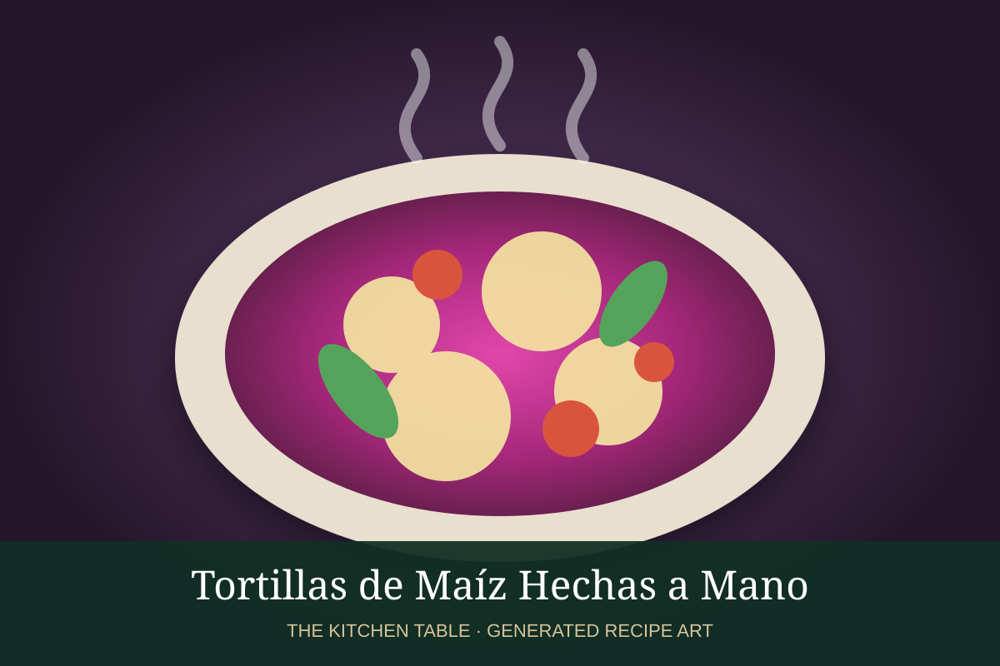

← Back to all recipes
BREAKFAST · MEXICAN
Entomatadas
Soft corn tortillas bathed in a mild tomato sauce and topped with crema, queso fresco, onion, and optional shredded chicken.
35 minServes 4

Photo: DiDi Food
Ingredients
- 12 corn tortillas
- 4 Roma tomatoes
- 1/4 white onion
- 2 garlic cloves
- 1 serrano, optional
- 1 cup chicken stock
- 2 cups shredded chicken, optional
- 1/2 cup crema
- 3/4 cup queso fresco
- Sliced onion
- Salt
Preparation
- Blend tomatoes, onion, garlic, serrano, stock, and salt.
- Simmer sauce 10 minutes.
- Warm tortillas briefly in a little oil.
- Dip tortillas in tomato sauce, fill with chicken if using, and fold.
- Top with more sauce, crema, queso fresco, and onion.
Related Mexican Recipes
Salsa Roja → · Handmade Corn Tortillas → · Frijoles Refritos → · Enfrijoladas →